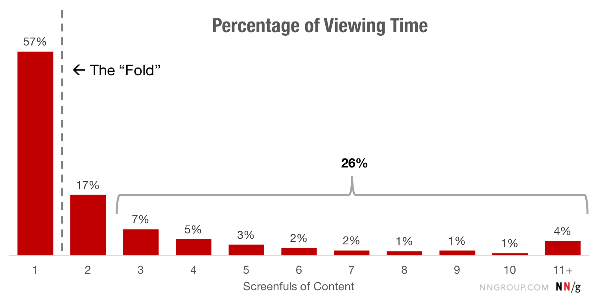

Ux Strategy: What Is & Why It Is Matter
What is the footer of a website?
The website footer is the section of content at the very bottom of a web page. It typically contains a copyright notice, link to a privacy policy, sitemap, logo, contact information, social media icons, and an email sign-up form. In short, a footer contains information that improves a website’s overall usability.
You might be thinking that there's no point in putting a lot of time and effort into the page footer because people don't pay attention to content below the fold. This type of thinking is validated by most scroll behavior research, including the last major study performed by Neilsen Norman Group in 2018. They found that 57% of page-viewing time was spent above the fold.
However, according to the study, time spent above the fold is decreasing over time as screens get larger, designers favor minimalism, and scrolling becomes normalized in general. The summary of this study states that "people will scroll if they have a reason to do it."
With that in mind, because footers serve navigational and informational purposes for your audience, it only makes sense to optimize this real estate for them despite it being so far down the page. You'll even notice that despite Neilsen Norman Group's discovery that time spent viewing decreased the farther down the page, there's an uptick at the very end.
Graph Illustrating Percentage of Viewing Time by Number of Vertical Screenfuls of Content
This is an indication that users know that the page footer valuable information and they can go it, particularly when they are looking for something specific.
Now that we understand the importance of a website footer, let’s take a closer look at what information belongs in this section of a web page.
What to Put in a Website Footer
- Copyright Notice
- Privacy Policy Link
- Sitemap
- Logo
- Contact Information
- Social Media Icons
- Email Sign-up Form
It’s important to understand that the only requirement for designing a great website footer is knowing what your visitors are looking for. That’s why there’s no precise recipe for a website footer. There’s some standard ingredients but what exactly you put in, the amount, the order — it’s up to you.
Let’s take a look at some of the ingredients you might use to design your website footer.
Copyright Notice
Arguably the most important element of a website footer is the copyright notice. According to Stephen Fishman, J.D., in a legal article on Nolo, a copyright notice is “a written notice stating that a particular work is protected by copyright, and that you own that copyright.” The purpose is simple: to deter anyone from copying an image, animation, paragraph or otherwise trying to steal content from your website.
All that’s needed is the copyright symbol © (or the words "Copyright" or "Copr.”), the year of the website’s publication or most recent substantial update, and the name of the copyright owner. The copyright notice only has to appear once on your website’s homepage, but it can appear on as many pages as you want. It can be placed anywhere on the homepage, but is most often found in the footer.
Here’s an example from HubSpot’s blog homepage.

Footer Example With Copyright Notice: HubSpot
Privacy Policy Link
If you’re collecting personal data from users, like their email addresses or payment information, then Privacy Policy agreements are mandatory by law. For this reason, it’s essential to draft a legally compliant Privacy Policy and ensure this policy is easy to locate and access on your website.
A best practice is to put a link to your Privacy Policy in your website footer. Not only will this satisfy the legal requirement — it will also meet most consumers’ expectations since they expect to find this information in the footer. Some companies like Conde Nast will choose to include an excerpt of their Privacy Policy, in addition to a link. Here’s an example from The New Yorker.
Footer Example With Privacy Policy: The New Yorker
Sitemap
You can add a sitemap to your page footer in two ways. You can either provide multiple links to sections of your website, or you can provide a single link to your XML sitemap.
The first approach is known as creating a “sitemap footer.” These footers contain navigation points that can’t neatly fit into the top-level or global navigation bars of larger sites, or navigation points that encourage visitors to browse the site. The sitemap footer on Grace Eleyae, for example, includes navigation links that visitors might not have considered when first entering the site but would like to explore.
Footer Example With Sitemap: Grace Eleyae
The second approach to including a sitemap is designed with search engine bots in mind. One of the most important things a search engine bot will be looking for is a link to your XML Sitemap. Your sitemap is a file that contains URLs and information of the pages and media files you consider most important on your site. According to Google, search engines use this file to better crawl websites, particularly large and content-rich sites. That’s why providing a link to this file in your footer is considered a best practice for SEO.
Logo
Page footers are a great place to reinforce your brand identity. There’s a few approaches you can take. You can include your logo, but present it in a different way than in your header. Maybe you increase the font size. Maybe you include an image. Maybe you include a mission statement or your brand values below the logo. These are just a few ways you can remind visitors what your company stands for and make a memorable last impression.
Bequant, for example, adds its mission statement right below its logo in the footer. It reads: “Pioneering network optimization that improves speed, reduces latency and congestion – along with full visibility.” That way, a reader would have an idea of what the company did, even if they didn’t read the About page.
Footer Example With Logo: Envoy
Contact Information
You want potential leads to be able to get in contact with you as easily as possible. For that reason, website footers will often contain contact details like a business email, phone number, or mailing address. Or it might simply include a link that brings you to a contact form.
The luxury boutique hotel Bellevue Syrene dedicates one part of its website footer grid to its contact information. To ensure potential guests can contact the hotel in the way they want, the footer includes an address, phone number, fax number, and email address.
Footer Example With Contact Information: Bellevue Syrene
Social Media Icons
Social media is another way that potential leads can get in touch with you. Including social profile links in your page footer is considered a best practice for this reason. It’s also an easy way to grow your following across your platforms. Understanding these benefits, it makes sense that 72% of websites include icons for their social media websites in the footer.
Here’s a look at a display of animated social media icons on Rewind App by Flatstudio.
Footer Example With Social Icons: Rewind App by Flatstudio
Email Sign-up Form
Ideally, you want to present an email sign-up form to a visitor who understands the value of your content and wants more. A visitor who has scrolled to the bottom of your web page is a likely candidate. That’s why many websites use their footer as an opportunity to increase their subscribers.
For example, Chobani includes a simple email opt-in form in its footer. The tagline above — “Get the freshest Chobani news” — helps set the subscriber’s expectations on what exactly they’re signing up for.
Footer Example With Form: Chobani
Now that we know what possible content and elements we can put in a website footer, let’s look at some real examples that might inspire you.
Don't forget to share this post!